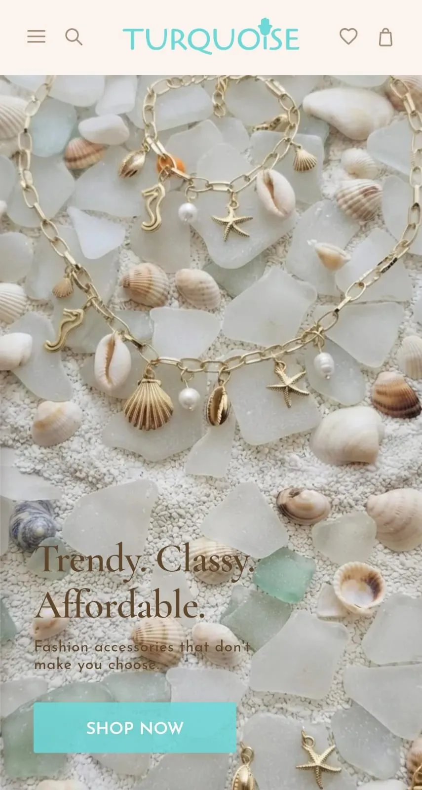
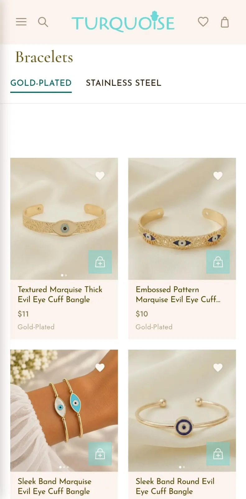
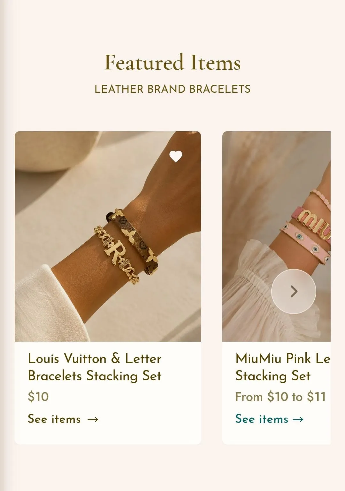
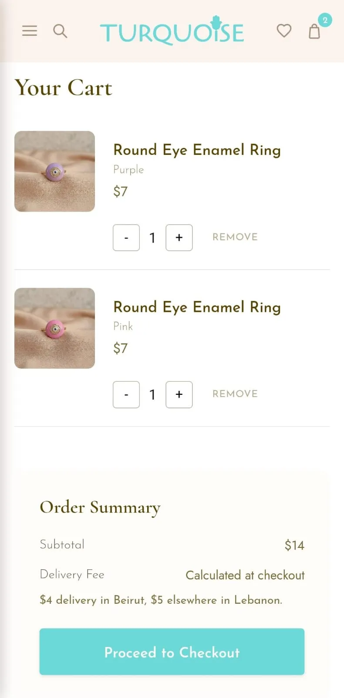
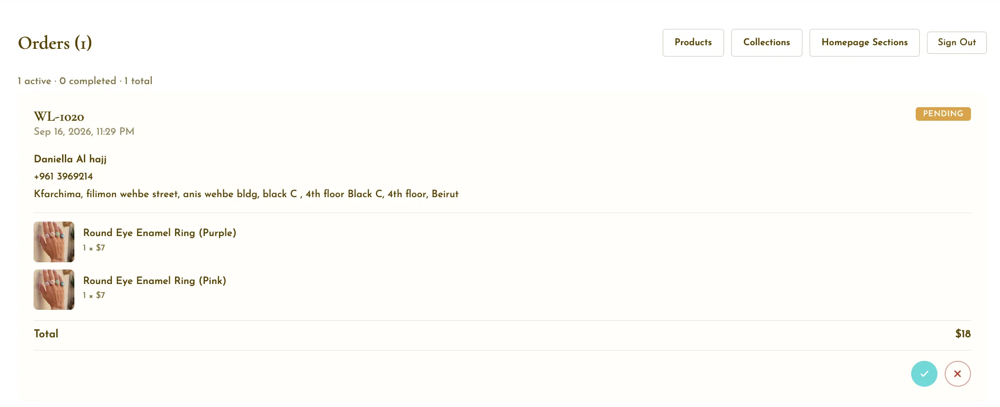

E-Commerce · UI/UX Design · Photography · Web Development
Visit Live Site →Turquoise Accessories is a full e-commerce site for a Lebanese fashion accessories brand, designed and built end to end — from the first Figma wireframes through to a live store with its own admin dashboard for day-to-day management. The scope covered visual design, UI/UX, product photography, and the front-end build itself, with every layout, carousel, and page division worked out and refined by hand rather than dropped in from a template.
Every page started as a Figma layout — the visual identity, color palette, typography, and page structure were all worked out there first, before a single line of the actual site was built.
Rather than following a fixed UX framework, the interaction design was worked out hands-on — testing how navigation, product browsing, and checkout actually felt to use, then refining each flow based on that until it felt intuitive.
All product photography across the site was shot and selected in-house, rather than sourced from a supplier — giving the catalog a consistent, cohesive look from one product page to the next.
The division of the site — how categories, collections, and style pages relate to each other, and how a visitor moves between them — was planned out deliberately rather than left to whatever a template provided.




Beyond the storefront, the project includes a full admin dashboard built for daily management — adding and editing products, organizing them by category and style, curating homepage sections, and tracking orders — so the site can be run day to day without touching any code.
